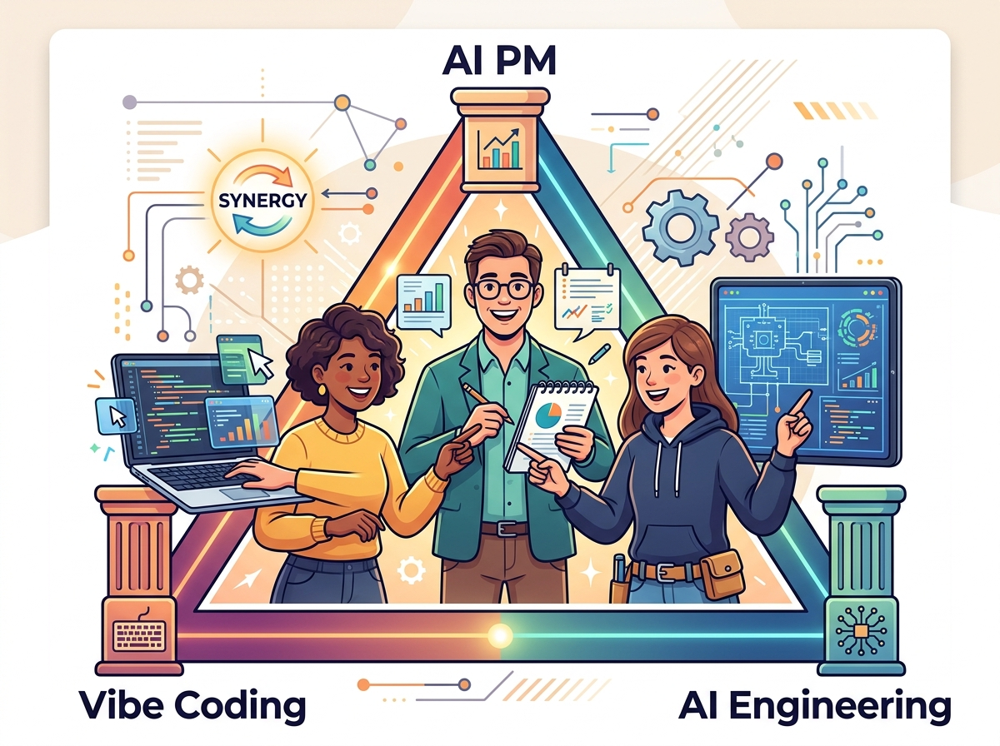
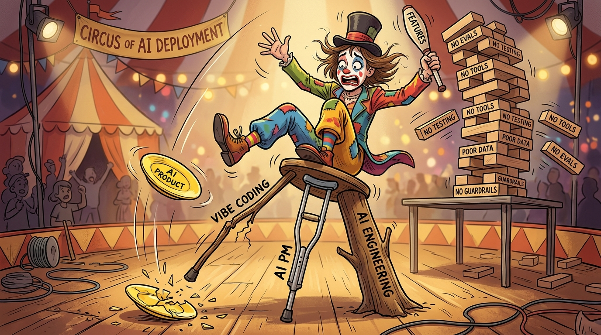

"Vibe coding is when you essentially just write the software in English, tell the AI what you want, and it writes it for you. But you still need to know how to code, to verify and guide the process."
Andrej Karpathy, February 2025
The Evidence Loop: How AI Products Are Actually Built
This book presents a unified operating model for building AI products. At its center is a simple loop that repeats throughout every phase of work:
Frame → Prototype → Measure → Architect → Launch → Learn → Reframe
This loop does not run once. It spirals. Each iteration produces evidence that reshapes the next cycle.
What Each Stage Means
- Frame: Define the user problem, value hypothesis, risk profile, and confidence boundaries.
- Prototype: Instantiate the idea quickly enough to test workflows, feasibility, and product assumptions.
- Measure: Evaluate usefulness, correctness, robustness, cost, latency, and user repair burden.
- Architect: Choose the minimum durable system justified by evidence.
- Launch: Operationalize with safeguards, rollout plans, support flows, and instrumentation.
- Learn: Collect user corrections, failure traces, and operational signals.
- Reframe: Update requirements, UX, prototype strategy, and architecture based on evidence.
This loop is not a phase gate process. It is a recursive system where evidence from later stages changes earlier assumptions. A prototype result may invalidate a requirement. A launch failure may restart the framing conversation. Evaluation binds all stages together from the beginning.
Three Roles, One Loop
Every stage of the loop involves three simultaneous modes of working:
- Product Management: Framing the opportunity, defining success, interpreting evidence for business value.
- Vibe Coding: Rapid prototyping, probing desirability and feasibility, testing workflows.
- AI Engineering: Architecting for durability, building measurement systems, ensuring reliability.
These are not sequential handoffs. They are three lenses applied simultaneously to every problem. A requirement is not complete until it has been prototyped and evaluated. A prototype is not valid until it has been measured against engineering constraints. An architecture is not justified until evidence from the field confirms it.
By the end of this book, you will have traced one realistic product through the complete loop. Each chapter contributes one layer: framing produces the eval-first PRD, prototyping produces a working artifact, measurement produces confidence data, architecture produces a system contract, launch produces operational evidence, learning produces updates.
The final capstone deliverable is not a report. It is a connected artifact stack: a PRD, a prototype, an eval suite, an architecture decision record, a launch plan, and a learning log, all linked and consistent.
Four Questions Every Chapter Answers
As you read, you will notice every major chapter returns to these four questions:
- What are we trying to learn? What decision does this work inform?
- What is the fastest prototype that could teach it? What artifact tests this assumption cheaply?
- What would count as success or failure? What eval captures this?
- What engineering consequence follows from the result? How does this change what we build?
These questions keep product decisions, prototype work, and engineering outcomes linked. They are the grammatical structure that makes the book feel like one coherent system rather than a collection of topics.


Running Products: Seeing the Loop in Action
Throughout this book, three recurring products demonstrate the loop in action. Each one surfaces different tensions and decisions:
- QuickShip Logistics — a productivity copilot that helps dispatchers manage routes and handle exceptions. Shows how evaluation drives routing decisions and how prototype results reshape requirements.
- HealthMetrics Analytics — a workflow automation product that coordinates clinical data from multiple sources. Shows how product framing constrains architecture and how post-launch learning loops update both.
- DataForge Enterprise — an enterprise AI platform that embeds AI capabilities into data pipeline workflows. Shows how governance and security interact with prototype speed and how engineering decisions reshape PM prioritization.
You will see these products at different stages of the loop in different chapters. A chapter on discovery may show QuickShip being framed. A later chapter on architecture may show HealthMetrics being architected. The same product evolves under all three lenses across the book.
Where to Find Each Running Product
The table below maps each running product to the chapters where it appears, organized by the primary focus of each part:
| Running Product | Primary Focus | Key Chapters |
|---|---|---|
| QuickShip Logistics | Vibe coding, eval-driven requirements, cost-aware prototyping | Ch 1 (economics), Ch 5 (discovery), Ch 10-12 (vibe coding), Ch 15-16 (routing decisions), Ch 21-23 (prototype evaluation) |
| HealthMetrics Analytics | Governance, reliability, post-launch learning | Ch 1 (case study), Ch 6-8 (discovery/design), Ch 17-18 (reliability), Ch 24-25 (governance), Ch 28-30 (post-launch learning) |
| DataForge Enterprise | Architecture decisions, security, team topologies | Ch 1 (case study), Ch 7-9 (PM framing), Ch 13-14 (RAG systems), Ch 19-20 (architecture), Ch 26-27 (security patterns) |
Key artifacts in this book are not owned by one discipline. They are shared objects that change form as they move through the loop:
- Eval-first PRD: PM defines value hypothesis and acceptance logic. Vibe-coding uses it as a context packet. Engineering treats it as a system contract tied to measurement.
- User Journey: PM maps behavior and value path. Vibe-coding uses it as a scenario library for prototyping. Engineering converts it into test cases and instrumentation plan.
- Prototype Review: PM asks what changed in the opportunity. Vibe-coding records what was learned quickly and what stayed ambiguous. Engineering identifies what is now justified to harden.
- Postmortem: PM extracts product learning. Vibe-coding improves prompting and context. Engineering updates architecture and reliability patterns.
When you see an artifact in one chapter, expect to see it transformed in the next.
Anti-Patterns: How the Loop Breaks Down
The three-way interplay between framing, prototyping, and engineering is powerful, but it breaks down in predictable ways. Watch for these failure modes throughout the book:
- Deterministic requirements for probabilistic systems — Writing specifications as if outputs are guaranteed, not statistical.
- Demos mistaken for validated products — A working prototype shown once does not mean the problem is solved.
- Premature architecture — Building infrastructure before evidence justifies the complexity.
- Evaluation introduced too late — Defining quality after the product is already built.
- Launch without explicit confidence boundaries — Shipping without knowing what could go wrong and how to detect it.
- Product teams over-trusting benchmark scores — Benchmark performance does not guarantee user satisfaction.
- Engineering over-hardening ambiguous workflows — Building reliability into systems that have not been validated.
Each chapter highlights relevant anti-patterns and how to avoid them.
What Comes Next
The book follows the loop structure. Part I frames the opportunity and establishes the evidence loop as the organizing grammar. Part II shows how products are discovered and designed through the loop. Part III demonstrates how vibe coding accelerates prototyping at every stage. Part IV covers how architecture is justified by evidence. Part V formalizes evaluation as the discipline that binds all stages together. Part VI covers launching and learning. Part VII provides the capstone and teaching kit.
Chapter 1 begins with the economics of AI products and what AI can and cannot reliably do. It introduces the first of the four questions: What are we trying to learn?